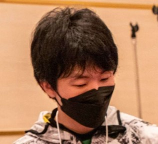
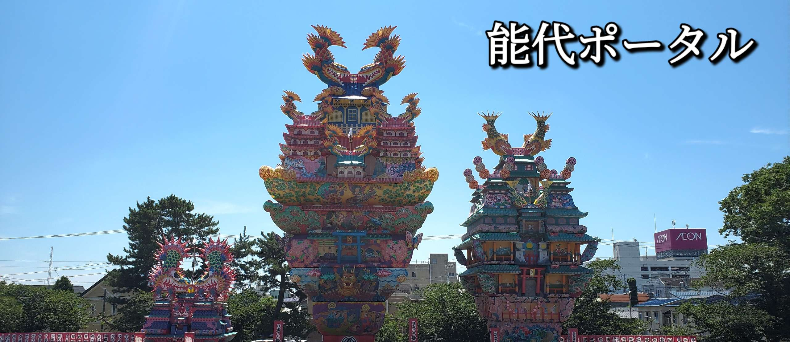
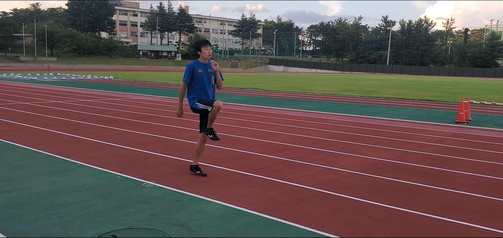

About me

Photo by @ossakekke
ゲーマーネーム：ユウ(ゲ)キ/Yuu(ge)ki
本名：畠山 侑生/Yuuki-Hatakeyama
秋田県出身、ITエンジニア志望のフリーターです。
大学在学中にテクノロジーを使ったものづくりに興味を持ち、様々な情報テクノロジーを学んだ後に地元の運送会社へ入社。
社内SEと総務業務の事務職を兼務したものの、組織に馴染めず退職。
その後、高齢者へ運動指導をするインストラクターとなったものの１か月で退職。
地元市役所の会計年度任用職員として働いた後、エンジニアのアルバイトをすることになった。
その他にも県内外のeスポーツコミュニティを少しずつ盛り上げている。
デジタルテクノロジーを使ったものづくりへの興味は今もあり、IT業界でたくさんのことを学び、経験したいと決意。
ポートフォリオとして、自身のWebサイトを開設することにした。
趣味はゲームや読書、アニメ鑑賞、陸上競技、パソコンいじりなど。
3DCGが好き。
Skill
thumb_up
できること
🖥️ 事務ソフト
📝 Web制作
🖼️ 画像編集
🎞️ 動画編集
sentiment_very_satisfied
興味のあるもの
🎮 ゲームプログラミング
👾 3DCG全般
🤖 機械学習
📦 AWS
dictionary
触ったことのある言語
📄 HTML/CSS
🎵 C#
📊 VBA
☕ Java
ink_pen
学びたい言語
➕C++
🍓Python
📜JavaScript
💎Ruby
file_open
使ったことのあるソフトと自信(★５評価)
★★★★★：自信あり
★★★★☆：少し自信あり
★★★☆☆：普通
★★☆☆☆：少し触った程度
★☆☆☆☆：触ったことがある程度
◇Word
◇Excel
◇Power Point
◇Adobe Photoshop
◇Adobe Illustrator
◇Adobe Premiere Pro
◇Inkscape
◇Gimp
◇Windows Media Player
◇Davinchi Resolve
◇Unity
◇blender
◇Maya
◇Microsoft Visual Studio
◇Visual Studio Code
◇Word Press
★★★★☆
★★★★★
★★★★★
★☆☆☆☆
★☆☆☆☆
★★☆☆☆
★★☆☆☆
★★★☆☆
★★★★★
★★★☆☆
★★★☆☆
★★★★☆
★★☆☆☆
★★☆☆☆
★★☆☆☆
★★☆☆☆
Works
ゲームコミュニティ大会
秋田県内でゲームコミュニティ大会の主催者をやっています！！
イベントの企画、実行、広報活動、会場準備、実況、片付けなど多岐にわたって活動しています。
また、秋田県内で行われるイベント内でゲームブースがあるときには、自身の経験を活かして、お手伝いもしております。
学生のときに、ゲームのコミュニティに入り、ゲームを通してたくさんの人と交流する、高めあうといったことに魅力を感じていました。
秋田でもそういったコミュニティがあったものの、継続ができていないといった課題がありました。
そのため、自身で率先して秋田でもゲームのコミュニティを盛り上げよう、継続していこうと思い、秋田に戻ってきた2020年から現在にかけて取り組んできました。
この活動を通して、失敗することもありましたが、改善していくことで参加者が満足するイベントになり、たくさんの人から感謝の言葉をもらいました。
自身のやりたいことに対して目標を決めて、周りを巻き込み、夢中になって取り組むことから、やりがいがあるとモチベーションが沸いてくるのだと気付きました。
ゲームのコミュニティを発展していくためにも、今後も活動的に続けていきたいと考えています。

能代ポータル
2022年4月から能代ポータルのポータルライターとして情報発信をしています。
秋田県能代山本地域のニュース、グルメ、イベント情報発信サイトとなります。
Hobby
陸上競技
男子400mを中心に短距離を走るスプリンターとして、中学時代～大学時代にかけて陸上競技に取り組んでいました。以下、自身の活動記録となります。
中学時代
走り高跳びで活躍する姉の影響を受けて陸上競技部に入部。入部当初は決して速い選手ではなく、部内でも下から数えた方が早いくらいには遅かった。
最初は100mを希望していたものの枠がなく、400mの選手として走ることになる。そのまま400mを続け、練習を重ねていくうちに記録の大幅更新を達成。
更に大会に出るごとに記録の更新を続けて、最終的には全県大会で400mの全国標準記録である52秒を切り、全国大会へ進出。
そのまま男子400mの全県大会優勝者となり、東北大会と全国大会に進出した。
高校時代
高校時代も順当に記録を伸ばしていくが、高校２年目のときに椎間板ヘルニアを起こし、思い通りの走りができなくなる。
気持ち的にかなり落ち込んでしまうが、仲間たちの支えもあり体を鍛えることでヘルニアを克服。
4×400mリレーのアンカーを努め、仲間たちの先導もあったおかげで地区大会で優勝した。
また、県内の400m高校生部門で最も速い記録を出した選手となった。
大学時代
入学初めで左足の筋膜炎を起こして走れなくなる。療養期間を経て、走れるようになったものの、400mで伸び悩む。
監督の提案から800mへ種目を変更し、自身の走り方も見直していくことで少しずつ走れるようになる。
その結果、大学2年目の大学総体で2位となる。
その後、自身の一番やりたい種目は400mだと監督へ相談し、400mの選手として活躍をした。
大学4年目のときの県選手権大会で400mに出場。結果を残したことで県の代表選手として次のラウンドの東北選手権大会を走った。
社会人
地元に戻ってからは母校の中学校で陸上競技部の臨時コーチとして指導。指導した生徒のうち、1人が東北大会へ進出。
その後、自身の今後の活動を見つめ直し、2022年に退任することになった。
2023年から陸上競技を選手として再開し、100mの自己ベストを更新する他、200mと400mの秋田県標準記録を突破。
今後も機会があれば挑戦していく予定。
| 選手情報 |
|

練習中の自分
|
| 成績 |
|---|
| 秋田県総体 | 中学 決勝
男子400m 優勝(2012年) |
| 秋田県選手権 |
一般の部 決勝
男子400m 3位(2015年)
movie
|
| 種目 | 記録 |
| 100m | 11秒57(2023年) |
| 200m | 22秒84(2015年) |
| 400m | 49秒16(2015年) |
| 800m | 1分58秒04(2017年) |